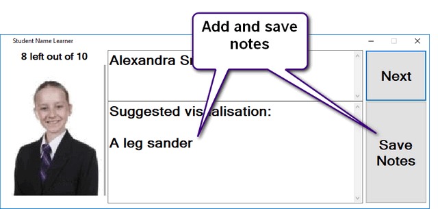
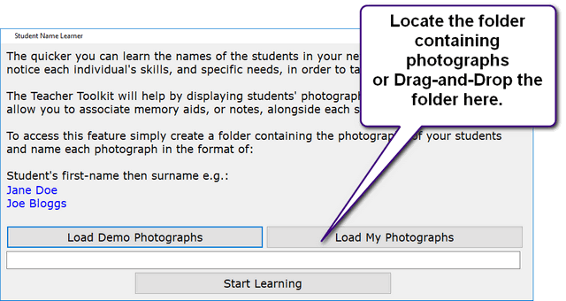

Learn Student Names
When you have a new class, you can become more efficient if you learn the names of your students as quickly as possible.
Memory techniques can help to speed this up.
The Teacher Toolkit has an option to randomly display pictures of students in your class, and associate these with notes and memory aids:

To use this, create a folder containing the photographs of your students - each photograph should have the name you wish to learn.

Try to only learn a few (10 or less) at a time and add more to this folder as you become successful.
Top tip:
To memorise a person's name use these steps:
1) Convert the name into some form of image.
2) Choose a visual feature, on the person, that will act as a trigger.
3) Link the trigger-feature to the image using an elaborate and vivid visualisation.
4) Devote a few seconds to visualising this before moving on.